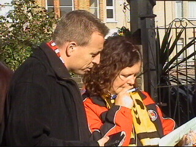
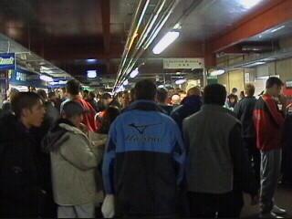
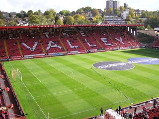
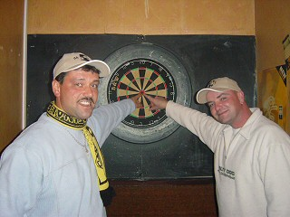

|
Charlton Athletic - Arsenal (1-1) 26 oktober 2003 |
English breakfast on board at SeaFrance.
Close to our hotel in Barking: West Ham-area!
At the Rose Of Denmark, Woolwich Rd London.
Saturdaynight, the day before the match.
A Guinness is good for you, two are better.....
Where is Ian?
There is Ian, our tickets-provider.
A Roda- and a Valleygirl unite.....
Unfortunately there was no CD-player in the pub.
What was a pity because the person on the left
took a bag with ceedees with him.
So we had to sing our own songs :-)
In between we enjoyed a Charlton Kebab and
some chicken-leggs.
At sundaymornig we rejoined the R.O.D.
A Roda-flag is allready hanging there.
Another English breakfast.....
On of the most favorite tables to hang on!
As Halloween is near we easily became some
crackers.
He doesn't know yet, but this guy is badly gonna
burn his hands....
31 of the 33 Rodafans made it to the Valley.
Nice scarfs ;-)

October 26th shows up like a sunny day so we
move to the beer-garden.
Only happy faces.
The William Hill-stand ;-)

This lucky bloke will turn out to be one of the
winners.
The police is coming in to join the party.
If you wonder what is a "koempel": it has two
meanings: coalminer and mate!
Almost time to go.
Forza Roda - Forza Charlton!!!

Another song.
Tricky Dicky is growing his beard until the first
defeat of Charlton Athletic.
Two friendly lads from Arsenal.
A final beer before leaving for the Valley.
The tickets and bar-passes.
On our way to the Valley.
Same tourniquettes as in our stadium.

Far too busy inside the ring.
The first Rodafans take their seats.

The desolated east-stand (not for long).
The north-stand.
Match was sold-out ( attendance: 26.660).
Time to party!
We recognize Dutchman Dennis Bergkamp,
old-international and now in his latter days.
Di Canio scores in a subtile way out of a doubtful
penalty. We don't care! It's 1-0!!! (26').
Fiesta on the north-stands.
Shit happens: Henry shoots the equalizer: 1-1
out of a free kick (39').
Corner by Pires ( I don't care but he was close
to my camera ;-)
Game over! Not a bad result.
As we had bar-passes for the cross-bar we went
here for a quick beer.
These are quite very important persons....
Most of us scored some souvenirs
at the very well equiped fan-shop.
These people are determined to come back,
(just as we are).

This is what we like: yellow/black and a piece of
red in the heart!
He was definitely the most photographed object
in London SE7.
We would like to thank Steve&Tracy, Ian Cartwright
and the people from the ROD for their help and
hospitality.
We'll meet at Roda JC - Vitesse in Kerkrade.
FORZA RODA - FORZA CHARLTON !!!